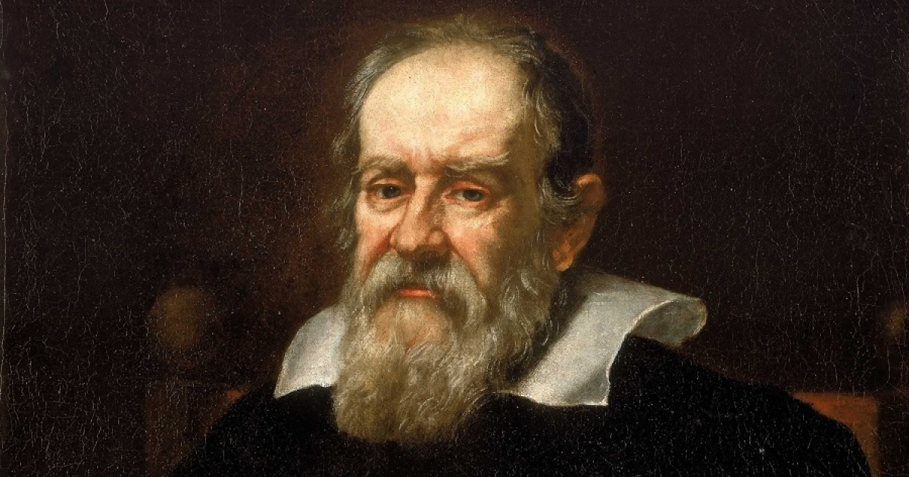
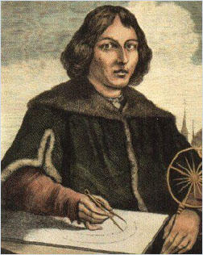

Ciencia y Filosofía en el Renacimiento
Contenido
- Avances científicos durante el Renacimiento.
- Principales figuras científicas y filosóficas (Galileo Galilei, Copérnico, etc.).
- Impacto de la ciencia renacentista en la modernidad.
- Recursos multimedia relacionados (Imágenes).
Avances Científicos Durante el Renacimiento
El Renacimiento fue un período de grandes descubrimientos y avances científicos. Se produjo un cambio significativo en la manera de entender el mundo, que pasó de basarse en dogmas religiosos a un enfoque más empírico y racional. Algunos de los principales campos de avance fueron:
- Astronomía: Se desafió la visión geocéntrica del universo con la propuesta heliocéntrica de Nicolás Copérnico.
- Anatomía: Andreas Vesalio revolucionó la anatomía con su obra "De humani corporis fabrica", que ofrecía una descripción detallada del cuerpo humano basada en la observación directa.
- Física: Galileo Galilei, a través de sus experimentos con la caída de los cuerpos y el movimiento, estableció las bases de la física moderna.
- Óptica: Johannes Kepler estudió la refracción de la luz y la visión humana, sentando las bases para el desarrollo de lentes y telescopios.
Principales Figuras Científicas y Filosóficas
El Renacimiento no solo fue una época de avances científicos, sino también de profundas reflexiones filosóficas que influyeron en el pensamiento moderno. Algunas de las figuras más destacadas incluyen:
- Galileo Galilei: Considerado el padre de la ciencia moderna, Galileo realizó importantes descubrimientos en astronomía, como las fases de Venus y las lunas de Júpiter. Su método experimental influyó en la evolución de la ciencia.
- Nicolás Copérnico: Astrónomo polaco que desarrolló la teoría heliocéntrica, revolucionando la concepción del universo al proponer que la Tierra gira alrededor del Sol.
- Leonardo da Vinci: Además de ser un artista renombrado, Da Vinci fue un ingeniero e inventor cuyas ideas abarcaban desde máquinas de vuelo hasta estudios anatómicos que revelaban la complejidad del cuerpo humano.
- René Descartes: Filósofo y matemático francés que es considerado el padre de la filosofía moderna. Su frase "Pienso, luego existo" refleja la importancia que daba al razonamiento como base del conocimiento.
- Francis Bacon: Filósofo inglés que promovió el método científico basado en la observación y la inducción. Es considerado uno de los fundadores de la ciencia empírica.
Impacto de la Ciencia Renacentista en la Modernidad
Los avances científicos y filosóficos del Renacimiento marcaron el inicio de la Revolución Científica, un período que transformó radicalmente el conocimiento humano. La transición hacia un enfoque empírico y racional sentó las bases para las ciencias modernas y el desarrollo tecnológico.
El pensamiento renacentista también promovió una visión humanista, centrada en el potencial y la capacidad del ser humano para entender y moldear su entorno. Este cambio de paradigma influyó en la Ilustración y en el desarrollo de los derechos humanos, así como en las ciencias sociales y políticas.
Recursos Multimedia Relacionados
A continuación, se presentan algunas imágenes relacionadas con las figuras más importantes del Renacimiento:
Galileo Galilei, padre de la astronomía moderna.
Nicolás Copérnico, autor de la teoría heliocéntrica.
Fuente de las imágenes: Wikipedia.